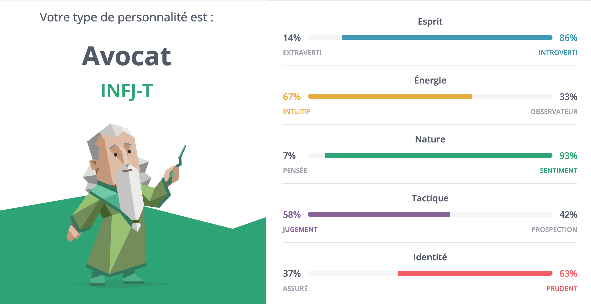

Fiche Rena
Cet article annule et remplace tout ce qui a été dit sur Rena.
Biographie
La mère de Rena est arrivée à Samare durant sa grossesse, après avoir fui son mari violent. Elle est morte en donnant naissance à Rena, qui est adopté par un couple de vieux ayant emménagé dans la cité dès sa création.
Rena grandit avec les autres enfants de Samare. Il est un peu introverti et trouve une bonne amie en Anelys qui le comprend, lui permet de garder le silence quand il le souhaite et est suffisamment lumineuse et chaleureuse pour eux deux. Il aime passer du temps avec elle parce qu’ainsi, il n’est jamais au centre de l’attention.
Timide, il garde souvent ses sentiments pour lui et attend qu’Anelys fasse le premier pas pour lui révéler qu’il l’aime aussi. Elle-même ayant pris son temps, ils ne commencent à devenir plus intimes que vers l’âge de 15 ans, après la mort du père adoptif de Rena (sa mère adoptive ayant péri quelques années auparavant). Quand Anelys lui apprend qu’elle quitte Samare, à peine un an plus tard, il est choqué et laisse la colère le submerger. Il ne comprend pas son choix et ne veut pas écouter ses excuses. Elle est plus mâture que lui. Il se borne à lui faire la tête et la laisse partir, mais le regrette aussitôt. Alors qu’elle doit quitter la cité en avion avec sa tante capitaine, Rena traverse la forêt pour la rejoindre et lui demander pardon. Sur le chemin, il est frappé par la foudre et tombe évanoui. Il ne lui dira pas au revoir.
C’est Romarin qui le découvre dans la forêt et lui porte secours. Il l’emmène auprès d’Arletty et ils découvrent rapidement que quelque chose d’inédit s’est produit. L’état de santé de Rena est précaire. Des tiges ligneuses semblables à celles d’un arbre lui poussent sur l’épaule. La douleur lui faait perdre connaissance, il est très faible. Arletty et Romarin craignent qu’il ne survive pas. Arletty prend soin de lui pendant des jours, tandis que Romarin découvre que des animaux de la forêt ont contracté la même mutation que Rena. Ils ont tous péri.
Rena sombre dans une profonde dépression pendant plusieurs mois. Avec ses amis à ses côtés, il réapprend progressivement à vivre et surtout, à aimer la vie. Il prend conscience de l’épée de Damoclès qui pèse au-dessus de lui et décide de tout faire pour rendre le monde meilleur avant de mourir. Il s’investit énormément dans la cité, participe à de nombreux ateliers et propose souvent de mener des excursions pour prôner les valeurs de Samare autour du monde.
Sa timidité n’a pas changé et il est assez faible. Romarin essaie de l’aider en veillant à ce qu’il n’en fasse pas trop. Il est du genre combatif, même s’il a eu ses moments de faiblesse quand Anelys est partie et quand il a compris qu’il était malade. Malgré tout, il défend ses idées et valeurs et il se bat pour les gens qu’il aime, pour la vie et pour le monde. Il aimerait mener des actions qui auraient du poids, mais ne s’en sent pas toujours capable et a du mal à aller vers les autres pour demander de l’aide. Il aime passer du temps avec les enfants, leur apprendre ce qu’ils veulent savoir, peindre et chanter avec eux. Il chérit la vie et profite de chaque instant comme si c’était le dernier.
Durant l’absence d’Anelys, il se rend plusieurs fois à la Capitale avec Arletty pour consulter des médecins, biologistes et chercheurs divers afin de comprendre exactement son état et de faire le nécessaire pour rester en forme. (Ces consultations impliquent que le gouverneur sait qu’il existe une maladie atypique à Samare. Il a acquis la certitude qu’elle n’est pas contagieuse et a donc décidé de ne pas en faire sa priorité.) Ils ne savent pas d’où vient la mutation ni ne comprennent son fonctionnement. Son état s’aggrave avec le temps, même s’il supporte les nouvelles pousses mieux que la plupart des animaux (sûrement parce qu’il a un corps plus résistant). Chaque fois que Rena se rend à la Capitale, il s’interdit de penser à Anelys. Il s’est juré de ne pas la revoir.
Quand Anelys revient, Rena est ébranlé. Il pensait ne jamais la revoir. Il l’aime encore. Contre les conseils de Romarin, il décide de rester à l’écart le plus possible. Aussi quand Anelys essaie-t-elle de renouer avec lui, il la repousse. Il se trouve qu’elle n’a pas beaucoup changé et est toujours aussi énergique, têtue et envahissante. Même si elle semble se désintéresser rapidement de Rena – ce qui le contrarie – elle s’impose dans son groupe d’amis. En effet, elle apprend l’existence de la mutation et veut les aider à l’éradiquer. Ils passent donc de plus en plus de temps ensemble et Rena s’inquiète de la perspicacité et de l’instinct d’Anelys. Il a peur qu’elle découvre qu’il est malade et que ses jours sont vraisemblablement comptés.
Le retour d’Anelys redonne aussi à Rena la volonté d’agir. Ses témoignages de ce qui se passe ailleurs le bouleversent. Il veut intervenir. Il n’a plus rien à perdre. Il se méfie un peu de Conrad – il n’a jamais trop apprécié les capitains et a l’impression qu’il y a quelque chose entre Anelys et lui. Il propose à ses amis d’intervenir directement à la Capitale, il a mis au point un plan pour s’introduire dans un abattoir et voler les animaux avant qu’ils ne soient tués. Anelys lui fait comprendre qu’il fait fausse route. Un conflit éclate, bien qu'ils essaient tous deux de l’éviter. C’est ce moment qui les rapproche le plus. Rena est le seul à vraiment se soucier de l’avenir du monde. Ses valeurs résonnent avec celles d’Anelys. Elle a du mal à ignorer ses sentiments envers lui.
C’est finalement Rena lui-même qui avoue à Anelys qu’il est malade. Cette révélation la bouleverse au plus haut point. Quand elle informe Rena qu’elle ne peut plus essayer de comprendre sa maladie et qu’il faut qu’elle agisse pour le bien de tous, il a l’impression de la perdre une nouvelle fois. Qu’une nouvelle fois, elle choisit les autres et pas lui. Mais il comprend. Il admire sa force de caractère et son courage. Il aimerait être aussi fort qu’elle et accomplir quelque chose d’utile avant qu’il ne soit trop tard. Il l’aide donc à convaincre Conrad de parler au gouverneur. Il l’aide à prévoir le plan de reboisement, avec recueil des associations de végétaux et écosystèmes disparus. Il garde ses sentiments pour lui et profite juste de chaque instant avec elle.
Après que le gouverneur passe à l’action et que les premières forêts renaissent, Rena sent une amélioration dans son état. Les pousses ont cessé. Il est plus résistant. Il y a moins de nouveaux animaux atteints. Pour la première fois, il commence à penser qu’il peut guérir. Il aide Anelys dans l’entreprise des activités extra-samarines et ils finissent par se montrer à quel point ils s’aiment.
Test de personnalité
Selon le test MBTI, Rena a un profil INFJ (Introversion, Intuition, Sentiments, Jugement) de type « avocat ». Résumé :
- sens inné de l’idéalisme et de la morale ;
- opinions très affirmées ;
- se bat sans relâche pour défendre une idée, jusqu’à dépasser son point de rupture et oublier de prendre soin de lui ;
- détermination, fermeté, fort caractère ;
- capable de prendre des mesures concrètes pour atteindre son but et laisser un impact positif ;
- tend à aller au cœur des problèmes pour que les gens n’aient pas à être sauvés ;
- s’exprime d’une voix calme et posée, maîtrise ses émotions ;
- mais quand il est confronté à un conflit, il peut perdre le contrôle et se défendre de façon irrationnelle et improductive (comme quand il se confronte à Anelys) ;
- créativité, imagination, conviction, sensibilité ;
- pense que rien ne peut aussi bien aider le monde que l’amour et la compassion (mais il a du mal à comprendre les capitains et ne leur montre que peu de compassion) ;
- facilité pour entrer en contact avec les autres, mais n’aime pas le faire et a besoin de passer du temps seul pour décompresser et récupérer ;
- se soucie beaucoup des sentiments des autres ;
- il doit se souvenir que même s’il est occupé à sauver le monde, il faut aussi prendre soin de lui (Arletty le lui rappelle souvent).
Apparence physique
- Yeux gris piqués de vert ;
- assez mince pour sa haute taille ;
- cheveux brun foncé lui tombant sur le front en une cascade de boucles, coupés court sur sa nuque ;
- peau pâle ;
- mâchoire anguleuse brunie par une fine barbe ;
- bouche au tracé doux et délicat ;
- nez large marqué par les cernes qui soulignent ses yeux ;
- végétaux lui poussant dans le dos, sous l’épaule gauche, et s’étendant de plus en plus comme une nuée de vers incrustés dans sa chair. C’est la mutation de la forêt. Il les coupe à ras de sa peau chaque jour, mais douille sévèrement.